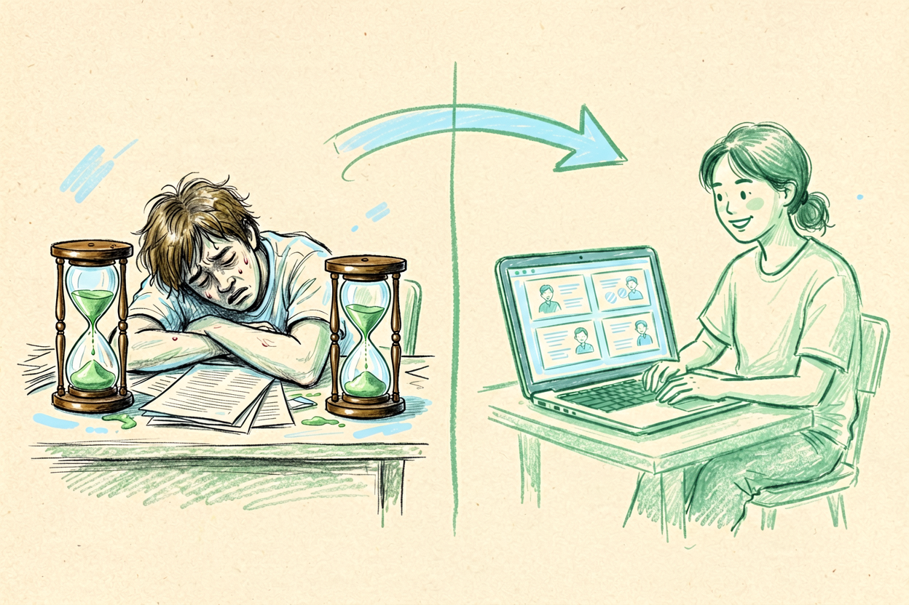

AI生成PPT教程：从零掌握从大纲到完整演示文稿的完整流程
做演示文稿最头疼的是排版和设计耗时？用AI一键生成输入主题就能出完整内容。
AI生成PPT是本文的核心主题，下面详细介绍如何使用。
AI生成PPT：为什么需要AI工具

传统PPT制作耗时耗力，从大纲到排版需要数小时甚至数天。AI生成PPT通过智能算法，可以在几分钟内生成完整演示文稿，大幅缩短制作时间。新手使用AI生成PPT前，先理解它的优势和局限。
AI生成PPT的优势在于速度快、模板丰富、风格统一。局限在于内容深度不足、创意有限、需要人工调整。理解这一点，才能合理使用AI生成PPT，而不是完全依赖它。
AI生成PPT：选择工具与平台

目前主流的AI生成PPT工具包括Gamma、Tome、Beautiful.ai等。Gamma适合商业演示，模板专业、风格现代。Tome适合叙事性内容，支持长篇幅 storytelling。Beautiful.ai适合数据展示，图表丰富、布局智能。
选择工具时，考虑演示类型、风格偏好、预算三个因素。商业汇报选Gamma，产品介绍选Tome，数据分析选Beautiful.ai。参考AI生成PPT工具对比，了解不同工具的详细对比。
AI生成PPT：编写大纲与选择模板

AI生成PPT教程的核心是大纲编写。大纲是演示文稿的骨架，决定了内容结构和逻辑顺序。好的大纲应该包含：封面页、目录页、内容页、总结页。内容页要分点清晰，每页一个主题，避免信息过载。
AI生成PPT大纲示例：
封面：项目名称、汇报人、日期
目录：主要内容概览
内容页1：问题背景
内容页2：解决方案
内容页3：实施计划
总结页：关键结论选择模板时，考虑演示场景和受众。商业汇报选简洁商务风，产品介绍选视觉冲击风，学术报告选严谨学术风。模板选择后，AI会根据大纲自动生成幻灯片，用户只需调整细节。
AI生成PPT：内容生成与排版调整

AI生成PPT的重点是内容生成和排版调整。AI会根据大纲生成每页的标题、正文、图表，用户可以手动编辑修改。排版方面，AI会自动调整布局、字体、颜色，用户只需微调。
使用AI处理Excel教程中的数据，可以生成专业的数据图表。参考剪映AI教程中的视觉设计技巧，提升演示文稿的视觉效果。结合AI办公自动化教程，实现演示文稿的批量生成。
AI生成PPT：导出与注意事项

AI生成PPT完成后，可以导出为PPTX、PDF、图片等格式。商业使用建议导出PPTX格式，方便后续编辑。发布时注意检查内容准确性、排版美观度、演示流畅度。
使用AI生成PPT时，记住它是辅助工具，不是替代你思考。生成的内容需要人工审核，关键数据必须验证。别让AI生成PPT替代你的判断，它只是起点，关键质量仍要自己把关。不要盲目信任AI生成的每一页内容。
AI生成PPT：实际制作案例

以一个实际案例说明AI生成PPT的流程。假设你要做一份产品发布会演示文稿，先在Gamma中选择「Product Launch」模板，输入大纲：封面、产品亮点、核心功能、市场数据、价格方案、联系方式。AI会根据大纲自动生成10页幻灯片，你只需调整文字和配图。导出时选择PPTX格式，可以在PowerPoint中进一步编辑。整个过程从0到完成只需15分钟，而传统方式需要3-4小时。以上是关于AI生成PPT的完整指南。 别让AI工具替代你的思考，关键决策仍要自己把关。不要盲目信任AI生成的内容。

本文信息核对于 2026-09-07。AI 产品的价格、免费额度与功能变动频繁，实际以各工具官网当前说明为准。